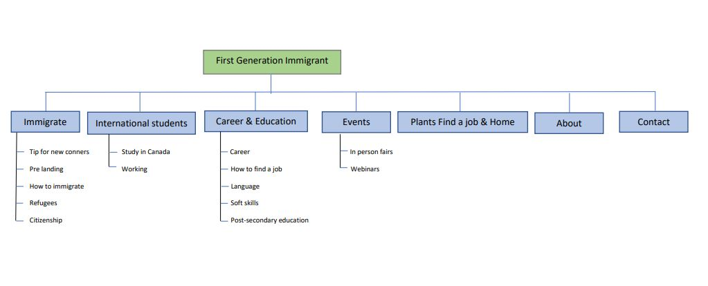

Guide for first Generation Immigrant to Canada

The Problem
Career is one of the biggest challenges faced by first-generation immigrant. Immigrant face difficulties in obtaining recognition for foreign academic credentials and discrimination on the job.
The Goal
Design a tool providing necessary information to help first-generation immigrants to start a new career.
Research
I have collected data on the Internet and social media to figure out difficulties faced by first generation immigrants, which were then used to conduct user interviews. Most interview participants reported finding difficult in starting a new career. The difficulties include obtain recognition for foreign academic credentials, equip the skills or qualifications needed for starting a new career, lack of connections and knowledge. The feedback received through research made it very clear that users need a tool that provide information of starting a new career and connect the users with the supports in the community.
Affinity Diagram
Using an affinity diagram helped us organize and cluster our information into different groups based on their relationship to one another. After categorizing our data, we assigned category names to each group. I would usually use sticky notes for this step, but since we were collaborating remotely, we used Miro (one of my favorite collaboration tools!) to create the Affinity Diagram.

We organized the insights based on different aspects of the immigration process. Our Affinity Diagram indicated that there are several steps and micro steps that users have to take within the immigration process, which were often the causes of the frustration and confusion.
After analyzing the affinity diagram and organizing the information, we were able to create two (2) personas:
Upon research and talking to a lot of my friends from different organizations, colleagues and extensive search on google has given me enough data, to sum up, their experience into the following two personas.


Sitemap
With the app designs completed, I started work on designing the responsive website. I used the app sitemap to guide the organizational structure of each screen’s design to ensure a cohesive and consistent experience across devices.

Ideation
After empathizing with the users and ideating, I drafted initial designs on paper ensured that the elements that made it to digital wireframes would be well-suited to address user pain points. Stars were used to mark the elements of each sketch that would be used in the initial digital wireframes.
Paper Wireframes
After we defined our user flows and site map, we started designing the paper wireframes.

Product Solution
Digital Wireframes
After drafting some paper wireframes, I created the initial digital designs for the career app. These designs focused on providing Career information, Education related information , Webinar to connect with people and learn new things etc.

low-fidelity Prototype
To prepare for usability testing, I created a low-fidelity prototype that connected the user flow of accessing information of getting a job, starting a business and obtaining new skills and find supports in the community.

Hi-fidelity Prototype
The high-fidelity prototype followed the same user flow as the low-fidelity prototype, including design changes made after the usability study.

Mockups

Takeaways
Users shared that the app could help them finding career information and making connections. I have received encouraging feedback from the participants. One quote from the usability studies participants was that “Great ideas to connect TheNewLand app (first-generation immigrants to Canada)".
This is the first project I am designing for the social good. I have tried to solve problems for new immigrants with a user-centered design focuses on the user’s needs and going through each through each steps of design process helped me come up with solutions that is beneficial to the society.